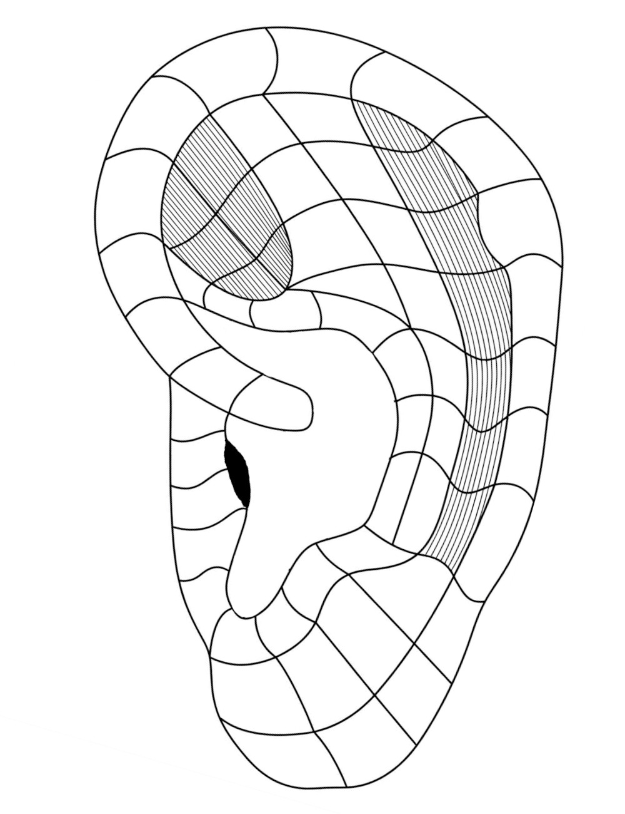

Puntos Maestros
Haga clic sobre la oreja para explorar
◎
Seleccione un punto
en el mapa auricular
Descripción
Indicaciones
Índice de puntos

Haga clic sobre la oreja para explorar
Seleccione un punto
en el mapa auricular